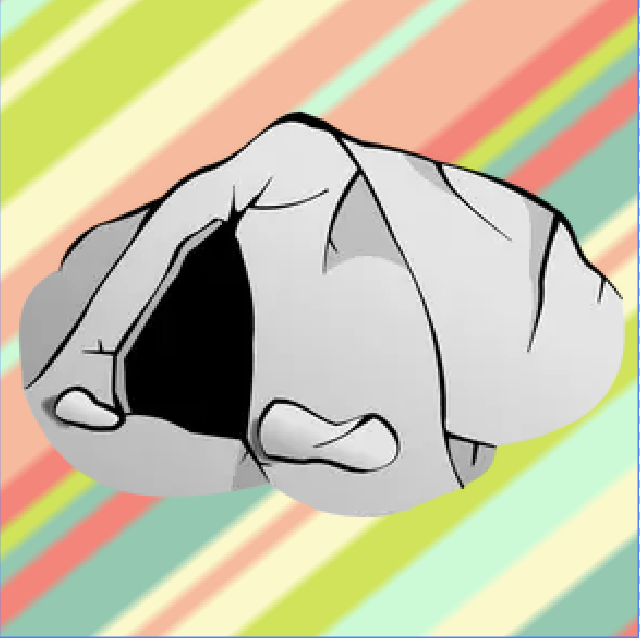

Message:
Welcome to CavemanOS! To get started, try opening some apps. The app icon that looks like a cave is your
"easter egg tracker".
It shows you all the secrets that you have found (more on that below) and still need to find. Hints can be
found by clicking on the icon of the secret you still need to find in the "easter egg tracker app".
Apart from that, please make sure to try out other features, such as leaving behind a message in the
"Campfire" app for others to see.
Once again, thank you for choosing to use CavemanOS. Have fun!
e